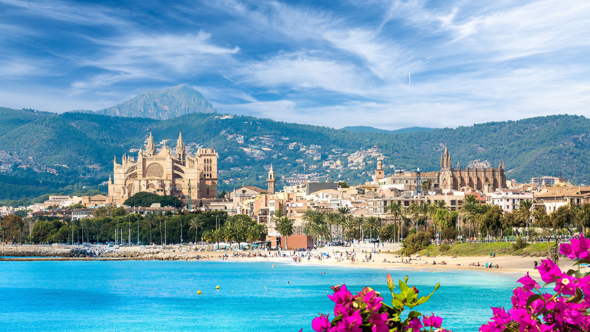
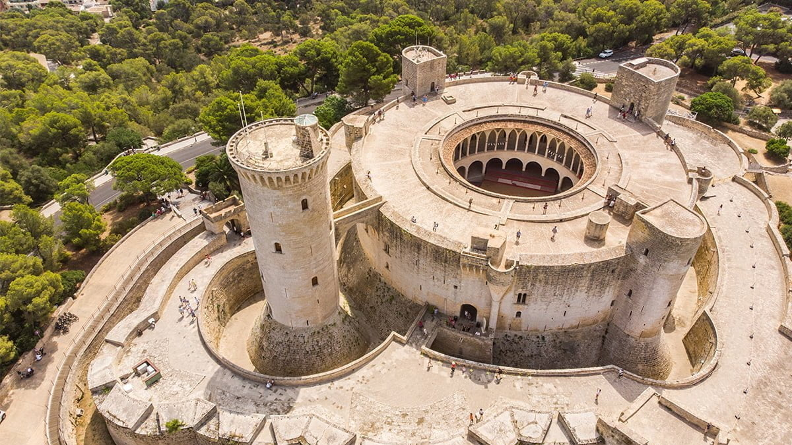
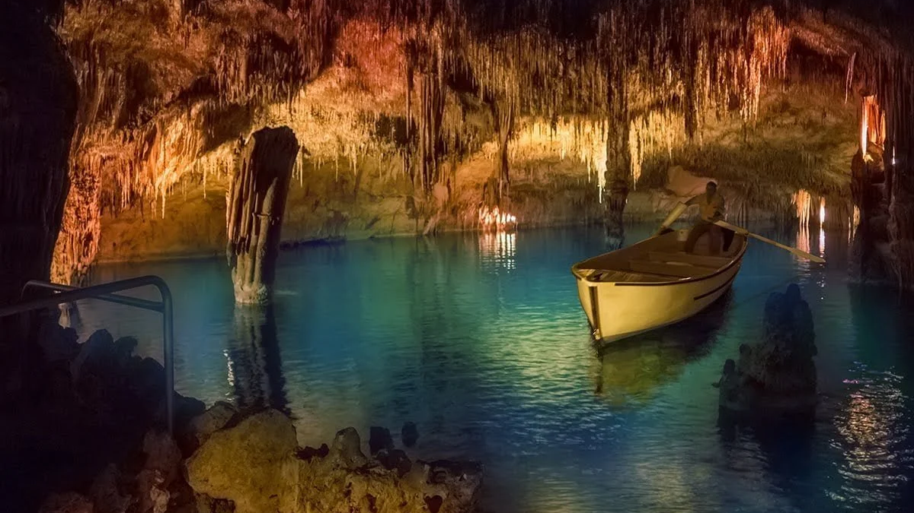

Rajska wyspa


Majorka urzeka kontrastami: turkusowymi zatokami, piaszczystymi plażami, majestatycznymi górami Tramuntana i kamiennymi miasteczkami. Pachnąca migdałami i cytrynami oferuje tętniącą życiem Palmę, jak i romantyczną Valldemossę. To idealne połączenie kultury, natury i błogiego relaksu. Majorka jest pełna słońca i niezapomnianych widoków i zachwyca o każdej porze roku.
Palma de Mallorca

Podczas wycieczki można poznać majestatyczną katedrę la Seu, budynek Can Forteza Rey, La Lonja - dawna giełda kupców wraz z gajem palmowym. Historia palmy łączy kulturę talajotycką, rzymską, arabską i w końcu hiszpańską. W Palma de Aquarium (25 metrowy tunel z rekinami) można spacerować pod wodą i obserwować rekiny oraz inne morskie zwierzęta. Każdego 20 stycznia Palma obchodzi święto Sant Sebastia, jest to festiwal z ogniskami, fajerwerkami i tradycyjnymi tańcami.
Zamek Bellwery
To zamek o wyjątkowym okrągłym kształcie. Styl budowli to klasyczny gotyk. Zamek został wzniesiony na wzgórzu, z którego rozciąga się panoramiczny widok na stolicę wyspy. Spacerując po trasach zamku można podziwiać malownicze krajobrazy. Centralny dziedziniec jest otoczony przez trzy okrągłe wieże i wieżę główną, zwaną Torre del Homenje.

Dla aktywnych
Majorka to doskonały kierunek dla aktywnych, ponieważ oferuje doskonałe warunki dla sportów wodnych, tj. żeglarstwo, nurkowanie, kitesurfing. Wyspa zapewnia również wspinaczkę, korty tenisowe, pola golfowe i malownicze trasy do biegania. Wyspa jest Europejską mekką rowerzystów. Oferuje zróżnicowane trasy - od płaskich po wymagające podjazdy w górach Sierra de Tramuntana.
Jaskinia Smoka
Smocze jamy znajdują się w Porto Cristo. We wnętrzu znajduje się kilka jezior, w tym Jezioro Martela. Jedno z największych podziemnych jezior na świecie, o długości 117 metrów i szerokości 30 metrów. Jaskinie ukształtowały wycieki wody. Można podziwiać niesamowitą formację skalną Góra Newado. Nad Jeziorem Martella grane są przepiękne koncerty od 1931 roku.

Dla smakosza
Wyspa słynie z pomarańczy, oliwek, migdałów i lokalnych wypieków ensajmadas - spiralne, słodkie wypieki w formie ślimaka o maślanej warstwowej strukturze. W upalne dni można się orzeźwić napojem arbuzowym Pikanterii z ziołami - miąższ z arbuza, szczypta ostrej papryki chilli, pieprz cayenne, sok z limonki, świeża mięta. Taka kombinacja słodyczy z ostrością jest bardzo orzeźwiająca.